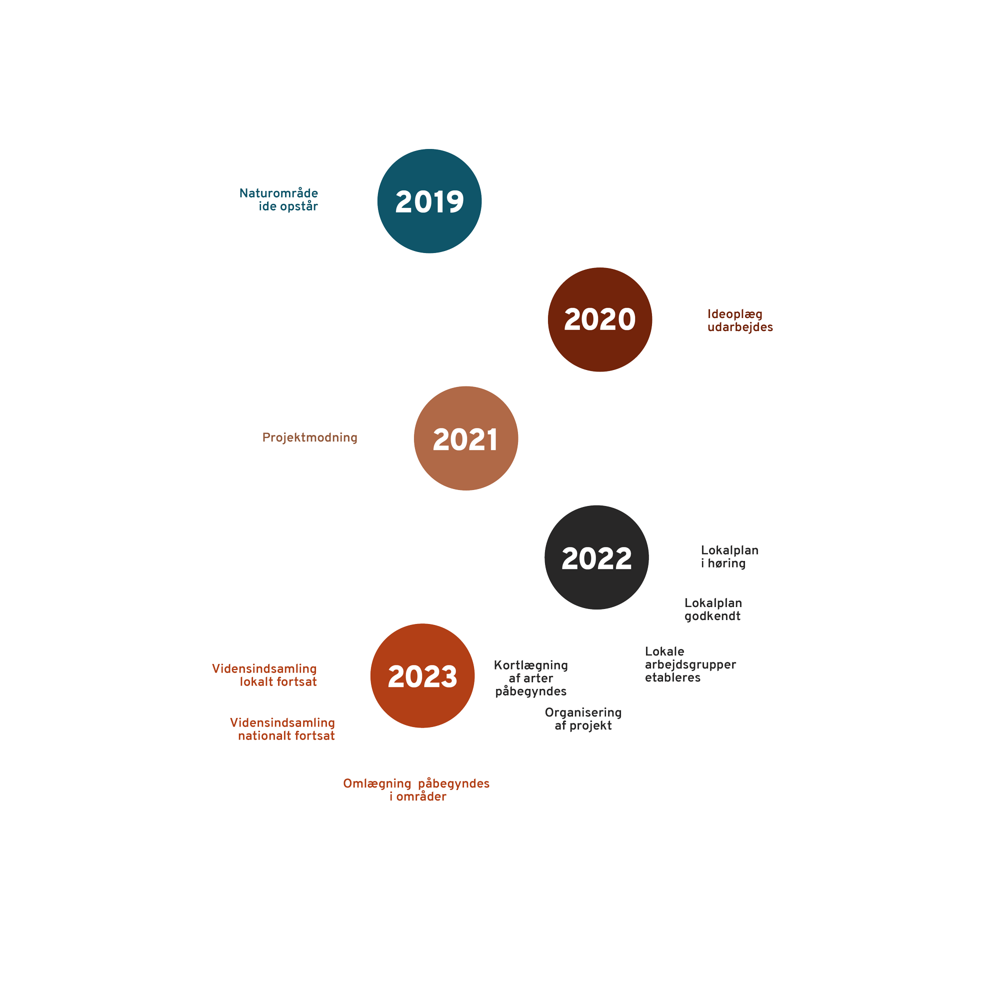

Proces – 100 år
Proces – Korte bane
Læs mere
Vi vil skabe rammerne for ro, fordybelse og mulighed for oplevelser i naturen – både for os, der nyder naturen i dag, men i ligeså høj grad for de generationer, som kommer efter os.
Baggrund
Veddelev og fjordens enge
Veddelev ligger på en halvø nord for Roskilde med udsigt til Roskilde Domkirke. Oprindeligt var den en lille langstrakt landsby med markerne skrånende ned til fjorden, op mod Risø og ind til Himmelev. Siden blev der anlagt sommerhuse på halvøen inden der blev udlagt boligparceller og sommerhuse blev ombygget til helårsboliger. I dag er området mest præget af den lokale lystbådehavn, en velbesøgt campingplads og strandpark for byens borgere, samt parcelhuskvarteret, der blev kilet ind mellem havn og landsby i anden halvdel af det 20. århundrede.
Mellem den gamle landsby og den nye bebyggelse strækker sig stadig en grøn kile, der hjælper til at den gamle landsby har fastholdt sin særegne identitet.
Landskabet omkring Veddelev er karakteriseret ved at være opdyrket landbrugsland med spredte gårde opført fra slutningen af 1800-tallet og frem mod 2. verdenskrig. Mange af gårdene er centreret omkring Veddelev Bygade og ligger som en langstrakt landsby på halvøen, der tidligere var en ø med vand på alle sider.
Sporene fra de lavninger og vådområder der definerede øen er forsvundet med tiden pga. landbrugsdrift. Ved at arbejde med en helhedsplan der tager udgangspunkt i de oprindelige lavninger, vådområder, strandenge, vandløb og beplantninger er det muligt at understøtte en genopretning af landskabets naturlige flora og fauna, til et samlet naturområde.
Et naturområde som skaber opmærksomhed om områdets dyreliv, stedets sanselighed, forståelsen af landskabet og relationen til Roskilde Fjord og Natura 2000 området omkring fjorden.
Læs mere
Historiske lag
Som en klassisk vejby ligger Veddelev Landsby endnu i sin lavning i landskabet hvorfra markerne tidligere skrånede ned mod Roskilde Fjord.
Efter landboreformen hvor halvdelen af gårdene blev udflyttet og landsbyen udskiftet, fastholdt de fleste dog deres grund inde i landsbyen. På disse opførtes i det 19. århundrede aftægts- og fiskerhuse. Selvom landsbyen derfor mest rummer byhuse, afspejler den dog stadig den dag i dag den middelalderlige karakter, som bebyggelsen fik efter anlæggelsen af Roskilde by omkring år 1000.
Mellem den gamle landsby og den nye bebyggelse strækker sig stadig en grøn kile, der hjælper til at den gamle landsby har fastholdt sin særegne identitet.
Landsbyens historie og drift er veldokumenteret gennem mere end 800 år. Identiteten som afgrænset landsby er overført til den bevarende lokalplan, som blev vedtaget i 1982 og som bl.a. indeholder detaljerede retningslinjer for bebyggelsens omgivelser og karakter, herunder bebyggelsens udformning, placering og materialevalg.
Landsbyens jorder strækker sig ud i landskabet som ubebyggede områder og på den lange lige sydgrænse støder de op til den anden halvdel af sognet, nemlig Himmelev. Den fremherskende gårdtypologi for området er hovedhuse med tre sammenhængende længer.
 Veddelev 1953
Veddelev 2000
Veddelev 1953
Veddelev 2000
Læs mere
Nedslag
Projektet i naturen
Ved en reetablering af lavningerne omkring Veddelev, dannes et naturområde som kan komme i direkte sammenhæng med de historiske gårde i Veddelev, landsbyen og fjordens landskabelige og bevaringsværdige kvaliteter.
Ved at etablere en natursti der forbinder området i et forløb rundt om lavningerne opstår der mulighed for rekreative nedslag som kan rumme en række sanselige og naturoplysende elementer og aktiviteter for naturområdets brugere.
Andre nedslag med høj arkitektonisk kvalitet placeret i forbindelse med naturstierne kan bidrage positivt til den samlede oplevelse af særlige steder eller oplevelser i landskabet, og dermed forløse naturområdets store potentiale. Nedslagene kan udformes så de kan anvendes til formidling af for eksempel skolernes naturundervisning.
En række, få og mindre, formidlingstavler kan fortælle områdets historie til brugerne af naturområdet, på særligt udvalgte og relevante steder i landskabet.
...og heroppe fra denne top får jeg endelig udsyn over egnen. Der ligger det hele for mit blik, roskilde-fjordens bund med dens utallige buster og smalle fjorde som et mægtigt delta omkrænset af åbne eller skovklædte landtunger og næs
Achton Friis ’Det Danske Land’
”Q&A
Ved et ambitiøst projekt som Veddelev Fjordenge, opstår der ofte spørgsmål.
Her er svarene på nogle af de oftest stillede:
Hvorfor kan adgangen fra Frederiksborgvej ikke beholdes, som den er - eller forbedres, så den er mere trafiksikker?
Vi har fra start ønsket en adgangsvej fra Frederiksborgvej, og Liljeborg har i en årrække sammen med Roskilde Kommune været i dialog med Vejdirektoratet om en trafiksikker løsning med tilkørsel fra Frederiksborgvej. Det er Vejdirektoratets fortsatte vurdering, at det ikke er muligt. Det respekterer vi, og vi har derfor udarbejdet en række alternative løsninger også sammen med Roskilde Kommune.
Skal vejen gennem området være med asfalt og gadelamper?
Nej – ingen asfalt eller gadelamper. For os er det afgørende, at vejen anlægges med respekt for omgivelserne på bedst mulig måde og at den vil fremstå som en markvej, der naturligt placeres i markerne med grus, lav hastighed og uden gadelamper.
Kan man være sikker på, at Liljeborg etablerer Veddelev Fjordenge som foreslået?
Ja, det har været et stort ønske for Liljeborg igennem længere tid at etablere et naturskønt område ved Dyskærgaard, og Liljeborg vil være stolte over at bidrage til Roskilde Kommunes strategi for den grønne ring.
Vil Liljeborg plante skov?
Nej, det er ikke planen at plante skov. Vi ønsker at etablere et naturskønt område, der lægger sig i forlængelse af de åbne enge mod nord, så området som helhed i fremtiden vil kunne tilbyde mere natur og mere biodiversitet, end den nuværende landbrugsjord i dag.
Bliver hele området mellem fugletårnet og Baunehøjvej en stor byggeplads i mange år frem i tiden?
Vi planlægger arbejdet i etaper, og området anlægges løbende, så det skaber færrest mulige gener for naboer i Veddelev og gæster i naturen. Hovedtemaet i Liljeborgs modernisering af Dyskærgaard, gøres med en nænsom ombygning af eksisterende bygninger, det er samme tilgang vi vil bruge når vi skal i gang med at genoprette landskabet til fjordenge.
Bliver den viden, naboerne har om natur og lokalhistorie bragt i spil?
Ja, det vores klare ønske, at naboerne, men også andre med erfaring fra lignende projekter, kan bidrage, når lokalplanen er godkendt. Naturen skal være til glæde for alle , det skal processen op til også bære præg af.
Bliver Skjoldungernes Land og naturorganisationer inddraget?
Ja, det er tanken at trække på deres viden og på den måde binde Veddelev Fjordenge ind i det kulturhistoriske landskab omkring Roskilde Fjord. Ligesom både nationale og lokale naturorganisationer er meget velkomne.
Hvad er Liljeborgs holdning til biodiversitet og bæredygtighed?
Vi vil gerne bidrage til øget biodiversitet og den bæredygtige dagsorden, så godt vi kan og her synes vi Fjordengene er det mest oplagte sted at begynde.
Ser man på projektet med Veddelev Fjordenge, så er det født ud fra et ønske om mere forskelligartet natur og som et bidrag til flere naturoplevelser i Roskilde og omegn.
Har Liljeborg erfaring med naturgenopretning?
Det er første gang, at Liljeborg står over for at gennemføre et så ambitiøst naturprojekt. Når de planmæssige rammer er på plads omkring etableringen af Veddelev Fjordenge, etablerer vi derfor en projektorganisering, der arbejder tæt sammen med biologer i Roskilde Kommune og andre eksperter.
Kommer der til at køre busser med kursister og skolebørn på markvejen?
Trafikken på markvejen er forbeholdt ansatte og gæster der skal til møde på Dyskærgaard. Det er ikke tanken at der på Dyskærgaard skal afholdes kurser eller inviteres skolebørn på besøg.
Skal de store lastbiler køre til Dyskærgaard med byggemateriale gennem Veddelev Fjordenge?
Nej, i byggeperioden forventer vi at benytte os af adgangen via Frederiksborgvej.
Hvor mange biler kommer der til at køre på adgangsvejen i det daglige?
Trafikken bliver begrænset. I dag er vi fire ansatte på Dyskærgård, og når fondens hovedsæde rykker fra København til Dyskærgaard, så vil antallet stige til mellem fem og ti personer på hverdage.
Hvilke arrangementer og aktiviteter vil foregå på Dyskærgaard, og hvor mange gæster vil der komme?
Dyskærgaard er en arbejdsplads, hvor medarbejdere og samarbejdspartnere mødes. Der vil for eksempel blive afholdt bestyrelsesmøder, og måske vil Liljeborgfondens samarbejdsorganisationer samles her en gang årligt.
Hvordan sikrer man sig, at Liljeborg ikke sælger ejendommen videre til en anden virksomhed med kursus og konferenceaktiviteter med langt flere gæster og mere trafik til følge?
Ønsket om at placere Liljeborgkoncernens hovedsæde i Veddelev, renoveringen af Dykærgaard og naturprojektet med at genoprette Veddelev Fjordenge er alt sammen et meget langsigtet valg og bundet op på Winnie Liljeborgs ønske om at gøre en indsats og en forskel for borgerne i Veddelev og Roskilde. Så det vi gør er ikke med salg for øje.
Hvem kan få lov at bruge naturområdet?
Det kan, og skal, vi alle. Vi arbejder også for, at fugletårnet og stisystemet gøres tilgængeligt for kørestolsbrugere.
Hvordan kan man få lov at dele sin viden om flora og fauna?
Vi etablerer lokale arbejdsgrupper, hvor man kan bidrage inden for en række temaer. Samarbejdet med kommunens biologer og lokalafdelingen af naturfredningsforeningen er i denne sammenhæng meget vigtig.
Hvordan får man indflydelse?
Vi gør det muligt for naboer og borgere at tilmelde sig en lokal arbejdsgruppe, som inden for et fast defineret tema – f.eks flora og fauna – kan bidrage til projektet. Vi lægger al information op om dette på vores hjemmeside, når tiden er inde, og håber på, at mange vil være med.
Arbejder Liljeborg sammen med Roskilde Kommune?
Vi har en strategi om at bakke op om det gode liv i Roskilde, og det indebærer også, at vi altid i vores projekter ser på, hvordan vi kan bakke op om kommunens langsigtede strategi. Så ja, vi har en god og åben dialog med Roskilde Kommune.
Hvordan kan det være, at det er gået så hurtigt med at lave en lokalplan for Dyskærgaard og naturområdet?
Det er ikke vores oplevelse, at behandlingen af Dyskærgaard og naturområdet er gået hurtigt. Vi har siden 2018 arbejdet på at kunne bruge Dyskærgaard som hovedsæde for Liljeborgfonden, så vi kan sidde tæt på dér, hvor vi arbejder. Det krævede udarbejdelse af en lokalplan – dels i forbindelse med ombygning af gården, dels i forbindelse med naturområdet.
Med tilbagemeldingerne blandt andet fra Vejdirektoratet blev vi enige med Roskilde Kommune om, at det ville være mest fornuftigt at udvikle en lokalplan, der kan sikre en sammenhængende og overordnet plan for bevarelse og udvikling af hele området. I tråd med nutidige og fremtidige ønsker og behov.
Der har således været en logisk og naturlig udviklingsproces gennem de seneste tre år, hvor tiden har gjort det muligt at inddrage erfaringer og viden undervejs således, at vi nu har de bedste forudsætninger for at skabe en god og bæredygtig plan for området i mange år frem.